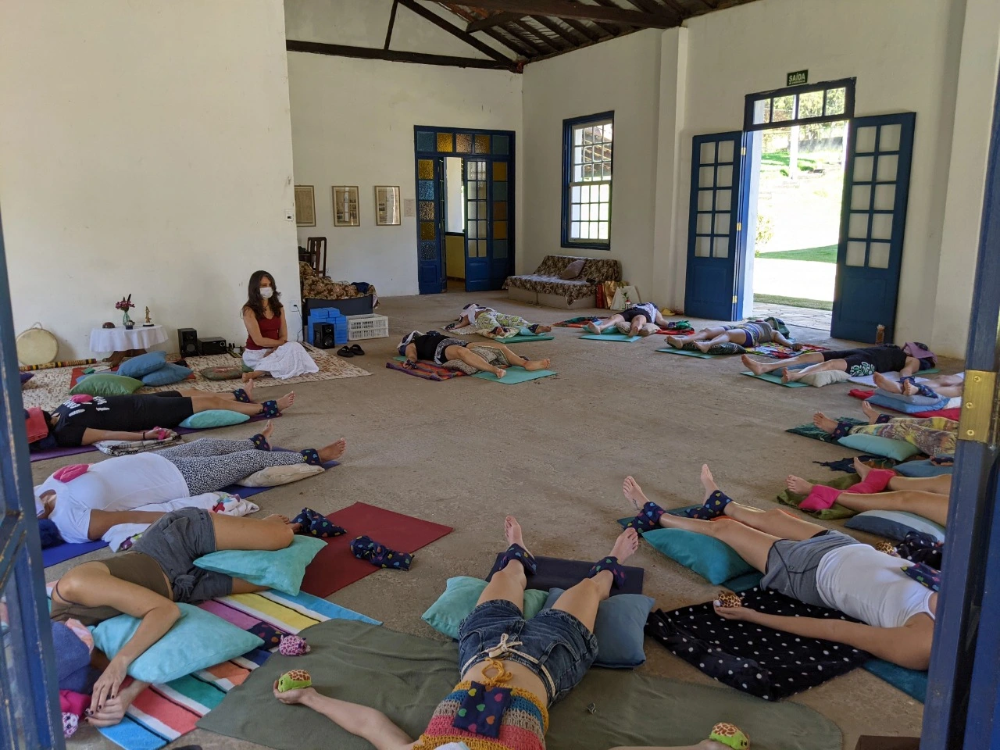
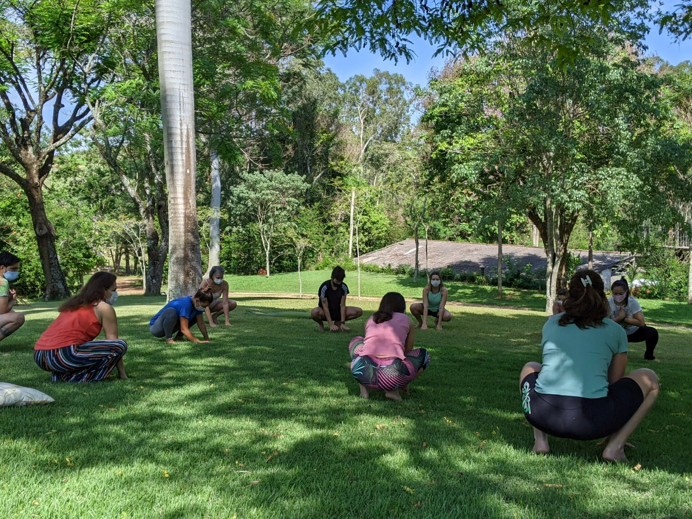
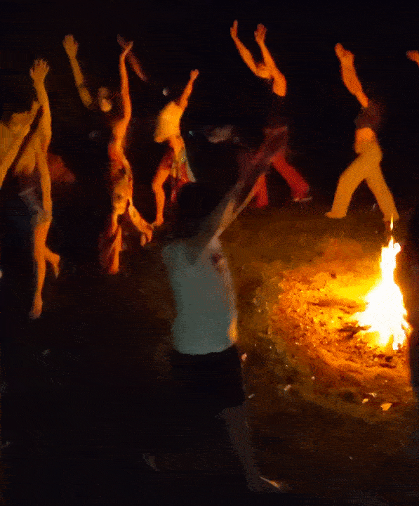
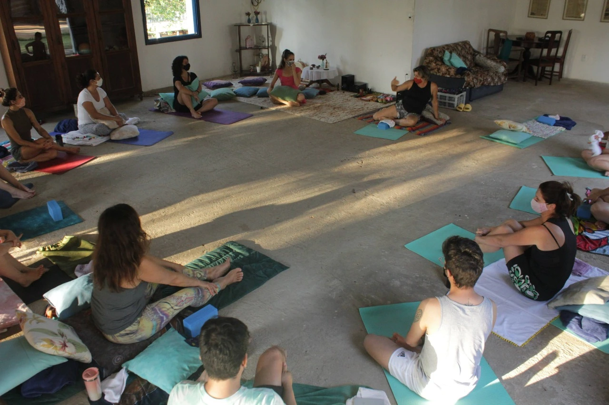
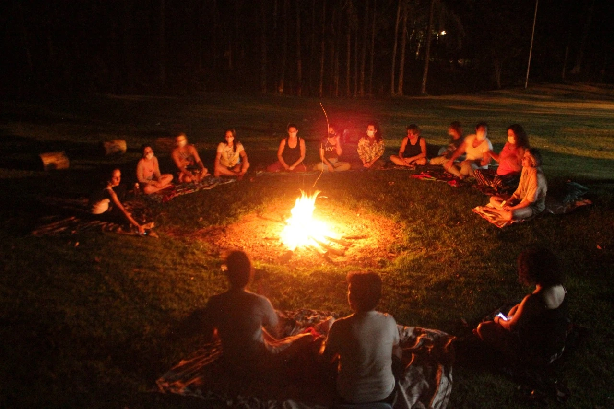
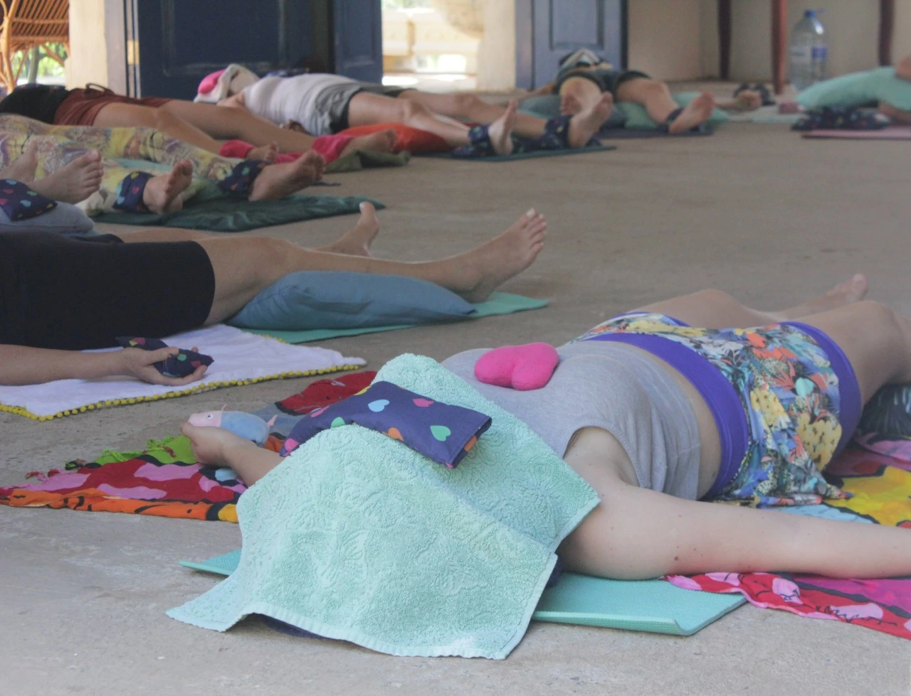
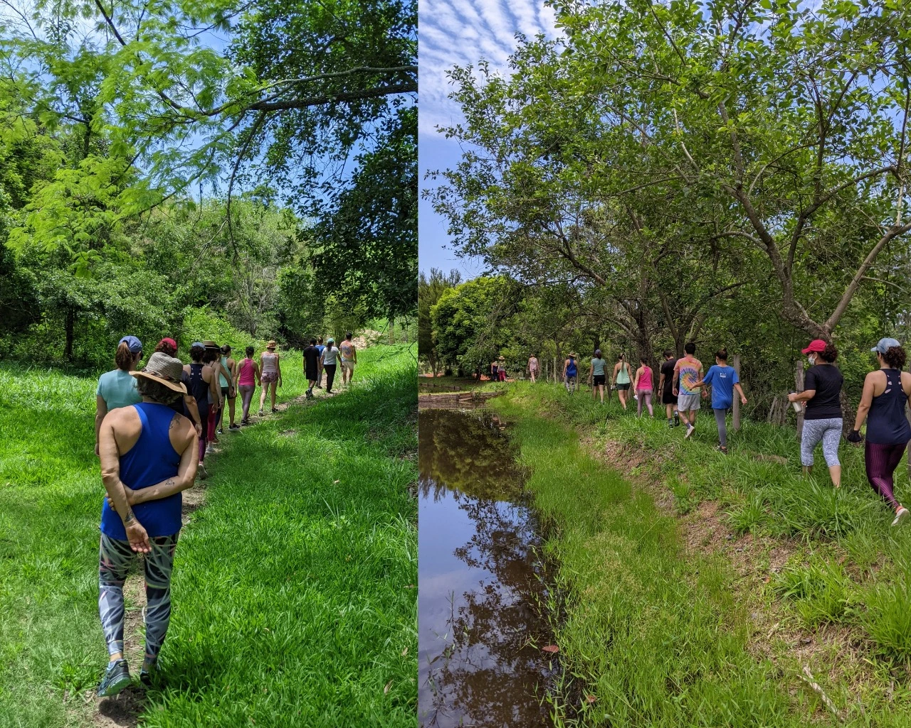
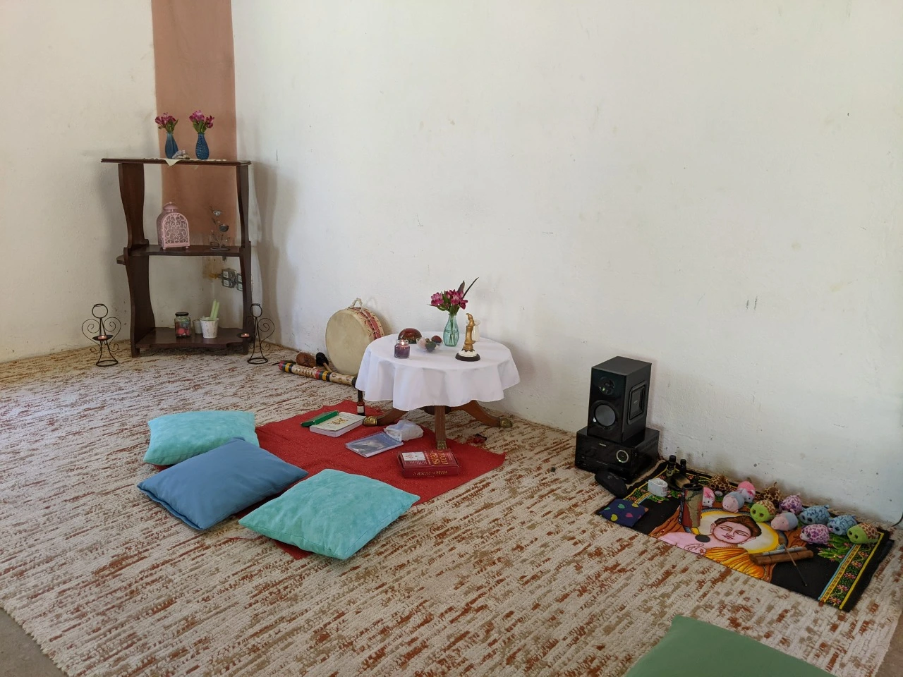
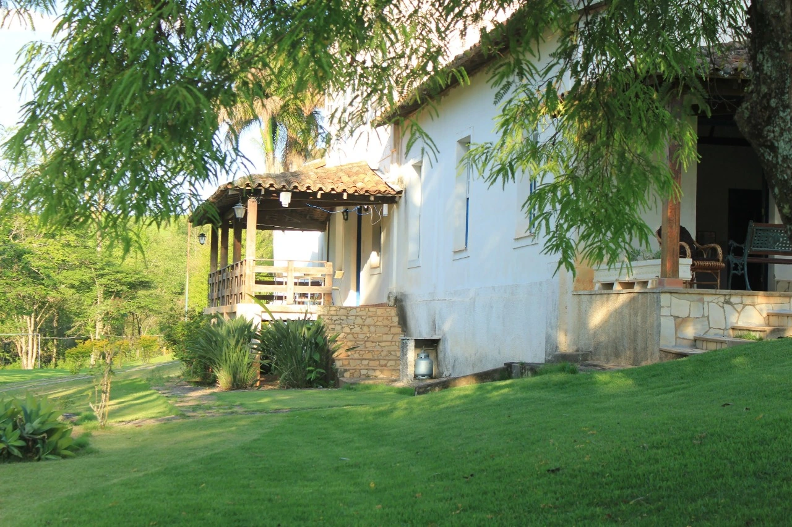
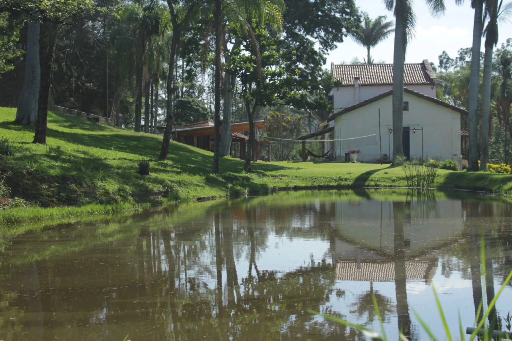

Retiro Restaurativo
Um descanso profundo e reparador
O Retiro Restaurativo do Namastê se fundamenta em alguns pilares:
- Integração Mente, Corpo e Alma.
- Descanso profundo e restaurador como fonte de saúde integral.
- Diminuição de estímulos visuais de telas e desaceleração do nosso ritmo de vida.
- Contato de Qualidade com a Natureza.
- Interação consciente e vivência de grupo.

Por meio das práticas e vivências oferecidas durante o retiro, buscaremos passar por esses pilares, para que cada um sinta os benefícios de uma vida mais simples, saudável e conectada com o ritmo da natureza. Nosso convite aos participantes é que venham abertos para sentirem novas sensações, para perceberem sutilezas que não são percebidas no modo "corriqueiro e automático de viver", e para estarem presentes para uma troca sincera de conhecimentos e experiências.
As atividades oferecidas serão:
Hatha Yoga

Dança Terapêutica

Roda de Conversa

Ritual do Fogo Vermelho

Yoga Restaurativa

Caminhada Contemplativa

Silêncio Meditativo

Informações:
Facilitadores:
Sara de Oliveira: Professora de Hatha Yoga, Yoga Restaurativa e Meditação. Renascedora pelo método de Leonard Orr e Facilitadora de Danças Circulares Sagradas.
Elisa Cavenaghi: Psicóloga e Psicoterapeuta Junguiana.
Davi Bragagnolo: Sociólogo, Terapeuta e Consultor
Data: 23/09/2022 (Chegada a partir das 17h) até 25/09/2022 (Encerramento às 16h).
Local: Fazenda Itapira/ Itapira - SP.


Site da Fazenda Itapira: www.fazendaitapira.com.br
Valores:
Acomodação Coletiva: R$ 550,00 (para dividir quarto em até quatro pessoas e banheiro até cinco pessoas)
Acomodação Suíte: R$ 620,00 (para dividir uma suíte em até 3 pessoas)
Suíte Casal: R$ 710,00
Valores individuais para cada pessoa participante. Neles estão inclusas todas as vivências do retiro e todas as refeições que serão servidas (dois jantares, dois almoços, dois cafés da manhã e um lanche da tarde). A alimentação servida durante o retiro será ovolactovegetariana.
Esses valores podem ser parcelados até a data do evento. Para realizar sua inscrição e para receber um material com a descrição detalhada das vivências, clique no link abaixo e fale diretamente com a Elisa.
Sua consciência é bem-vinda!